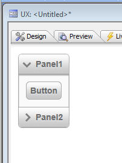
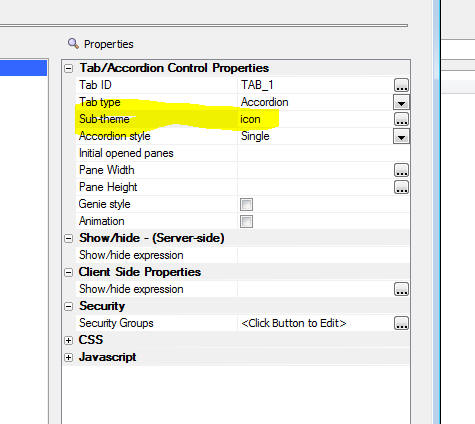

This document describes the updates and fixes made to Alpha Anywhere since its initial release.
To see the 'What's New in V12' document (which describes all of the new features in Alpha Anywhere's initial release) please click here.
Please note that Alpha Anywhere patches are only available to users with
a current subscription.
You can verify your subscription status from within Alpha Anywhere by
going to Help, About, or by clicking this link shown here (https://activation.alphasoftware.com/subscriptionStatus.aspx).
If you install an update for which your subscription is not entitled,
you will need to uninstall the update and rollback to an older version
that you are authorized to use in order to continue using Alpha
Anywhere.
In addition to the official updates that Alpha Software makes available from time to time (which are described in this document), we also make available our internal pre-release builds that allow you to see what features have been added and what bugs have been fixed since the last official update. The features and bug fixes in the pre-release build will be part of the next official update. To see the pre-release notes, please click here.
UX Component - Action Javascript - 'Google Map Methods (UX Component)' Action - Resize Map - A new option has been added to the 'Google Map Methods (UX Component)' action that allows you to resize the map. You can set the map height and width to an explicit size, or you can read the size from controls on the component, or you can call a Javascript function that returns the height and width.
NOTE: In many cases where a Map is used in a UX that has Panels, you will set the 'Fill container' property on the Map and so the map will resize automatically. You will not need this new action.
UX and Grid Component - Image Upload - Thumbnails - When you define how thumbnails are to be created, you can specify if the thumbnail is to be stored as a file on disk, or as binary data in a record. In the case where you specify a file on disk, the builder allows you to specify a 'suffix' that is automatically added to the filename. For example if the suffix is 'thumb1', then the file on disk might called 'image_thumb1.jpg'. However, there may be situations where you don't want the suffix. Previously, if you set the suffix to a blank value, the file on disk was created as 'image_.jpg'. Now, if you set the suffix to a blank value, the file on disk has no suffix at all (e.g. 'image.jpg').
Of course, if you set the suffix to a blank value, the upload folder for the thumbnails needs to be different than the upload folder for the main image you are uploading, or else when the thumbnail is created, it will overwrite the main image.
UX Component - Accordion Controls - Icons to Show Open/Close Status - You can now display icons on Accordion Panes to indicate if the pane is open or closed.
NOTE 2: If you have previously installed Alpha Anywhere, you will need to run a Full Install to get the new istyle sheets. The Patch Install does not update stylesheets.
For example, in the image below, the first Accordion pane is open, and so an icon pointing down is shown. The second Accordion pane is closed, so an icon pointing to the right is shown.

In order to enable this functionality, you simply select the appropriate sub-theme for the Accordion, as shown in the image below.
This sub-theme is defined in the style.js and style.css file in the css\iOS folder. If you wanted to add this behavior to Accordions for other styles (e.g. MobBlue, GrGray, etc.), you would need to modify the style.css and style.js files for these styles as described below.

The text in red below shows the code that was added to the style.js file in the css/iOS folder in order to add a new sub-theme called 'icon' to the Accordion control.
If you wanted to add the accordion icon functionality to a custom style of your own, you would need to edit the corresponding style.js file for that style and make a similar modification.
accordion: {
base: {
titleClassName: 'iOSAccordionButton',
titleSelectedClassName: 'iOSAccordionButtonSelected',
titleDisabledClassName: 'iOSAccordionButtonDisabled',
paneClassName: 'iOSAccordionPane'
},
icon: {
titleClassName: 'iOSAccordionIconButton',
titleSelectedClassName: 'iOSAccordionIconButtonSelected',
titleDisabledClassName: 'iOSAccordionIconButtonDisabled',
paneClassName: 'iOSAccordionPane'
}
},
The text below shows the CSS that was added to the style.css file in the css/iOS folder.
If you wanted to add the accordion icon functionality to a custom style of your own, you would need to edit the corresponding style.css file for that style and make a similar modification.
.iOSAccordionIconButton {
display: block;
text-decoration: none;
font: 14px Arial;
font-weight: bold;
color: #6a6a6a;
text-shadow: 0px 2px #d9dbe0;
background-color: #c8c8c8;
background-image: url('accordionClosed.png'), url('button.jpg');
background-position: left, center;
background-repeat: no-repeat, repeat;
background-size: auto, 100% 100%;
border-bottom: #ababab 1px solid;
padding: 8px;
padding-left: 28px;
}
.iOSAccordionIconButtonSelected {
display: block;
text-decoration: none;
font: 14px Arial;
font-weight: bold;
color: #6a6a6a;
text-shadow: 0px 2px #d9dbe0;
background-color: #c8c8c8;
background-image: url('accordionOpened.png'), url('button.jpg');
background-position: left, center;
background-repeat: no-repeat, repeat;
background-size: auto, 100% 100%;
border-bottom: #ababab 1px solid;
padding: 8px;
padding-left: 28px;
}
.iOSAccordionIconButtonDisabled {
display: block;
text-decoration: none;
font: 14px Arial;
font-weight: bold;
color: #aaa;
text-shadow: 0px 2px #d9dbe0;
background: #c8c8c8 url('button.jpg');
background-size: 100% 100%;
border-bottom: #ababab 1px solid;
padding: 8px;
padding-left: 28px;
}
UX Component - List Control - Refresh and Filter Operations - User Defined Ajax Callbacks - The List control has methods that allow you to refresh the data or filter the data. For example:
{dialog.object}.refreshListData('list1')
{dialog.object}._filterList('list1','country = "usa" ');
Each of these methods causes an Ajax callback.
Say you had a button on a UX that did a user-defined Ajax callback. Let's also assume that you want the button to refresh one list and filter another list. In the Javascript returned by the Ajax callback, you could certainly include the Javascript code to refresh the list and filter the other list, but then you would be triggering two additional Ajax callbacks. It would be preferable to have only a single Ajax callback.
This is now possible using a new Xbasic function:
a5_UX_Action()
The following examples show how this function can be used in an Xbasic function that handles a custom Ajax callback.
Function myCallbackXB as c (e as p)
'compute the Javascript to filter a list.
'we need to set properties in an object that will be passed to a5_ux_action()
dim ops as p
ops.Action = "Filter"
ops.filter = "country = :country and city = :city"
ops.order = "companyname desc"
'the arguments are specified in a crlf() delimited string.
'syntax is argumentValue|||type|argumentName
ops.parameters = "UK|||c|country" + crlf() + "London|||c|city"
'specify the id of the list to filter
ops.listId = "list1"
'compute the Javascript to filter the list
'the 3rd parameter 'ajaxListAction' indicates that the UX action
'we are going to perform is on a List.
'the default value for this parameter is 'ajaxListAction' so in
'this case, we could have omitted it.
dim xb as c
xb = a5_UX_Action(e,ops,"ajaxListAction")
'you can include other Javascript in the response that this callback returns.
'for example:
xb = xb + crlf() + "alert('List was filtered');"
myCallbackXB = xb
end function
Example 2:
Function myCallbackXB2 as c (e as p)
'compute the Javascript to refresh a list.
'we need to set properties in an object that will be passed to a5_ux_action()
dim ops as p
ops.Action = "Refresh"
ops.listId = "list1"
'compute the javascript to refresh the list
dim xb as c
xb = a5_UX_Action(e,ops,"ajaxListAction")
myCallbackXB2 = xb
end function
Example 3:
Function myCallbackXB3 as c (e as p)
'compute the Javascript to refresh data series
dim ops as p
ops.Action = "refreshDataSeries"
ops.seriesNames = "series1,series2,series3"
dim xb as c
xb = a5_UX_Action(e,ops)
myCallbackXB3 = xb
end function